Cancer is not one disease of one organ. It is what happens when one cell breaks the rules that this course has described: when to divide, when to stop, when to die, where to stay. Today we put the course together and look at cancer as cell biology going wrong.
After this lecture you can:
map the hallmarks of cancer onto the cell biology of this course: signalling, cell-cycle control, cell death, the cytoskeleton, metabolism;
explain the difference between oncogenes (gain of function, one hit) and tumour suppressors (loss of function, two hits);
explain why cancer needs many mutations, how genome instability speeds this up, and how clonal evolution makes every tumour a mixture of different cells;
describe invasion and metastasis (EMT, basement membrane, the metastatic cascade) and the role of the tumour microenvironment;
explain why targeted drugs stop working, why combinations help, and how checkpoint immunotherapy releases the immune system.
ELO 9 (disease mechanisms), building on ELO 3, 6, 7 and 8.
The question: why does cancer take decades, and why does it come back?
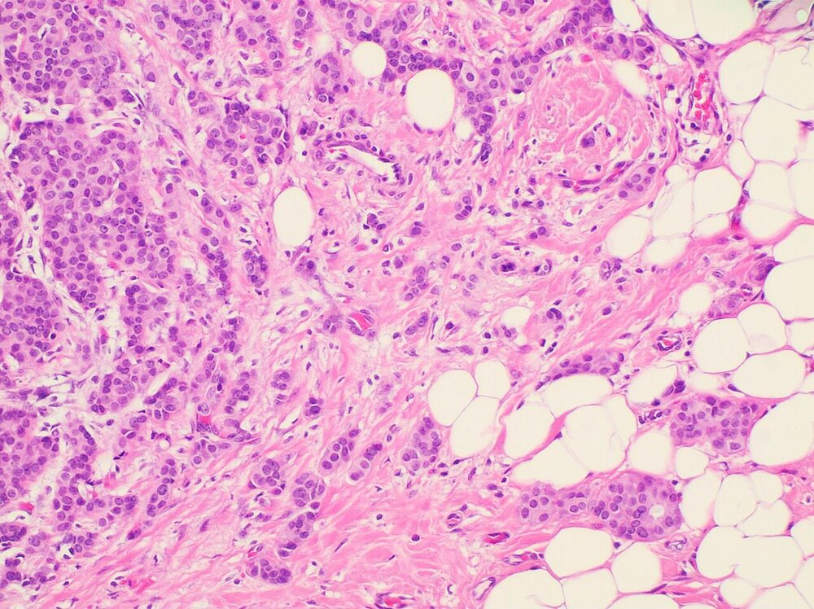
Breast cancer (invasive ductal carcinoma), H&E stain: nests of tumour cells (purple) growing through fibrous tissue (pink) and fat (white).
Each tumour starts from one cell: all its cells share the same founding mutations.
Yet one mutation is not enough. Most cancers appear after age 50, and the risk rises steeply with age.
A targeted drug can make a tumour shrink within weeks, and then it grows back, now resistant.
Most cancer deaths are caused not by the first tumour but by metastases in other organs.
What has to go wrong in a cell, and why is a tumour so hard to kill?
The hallmarks of cancer: a map of this course
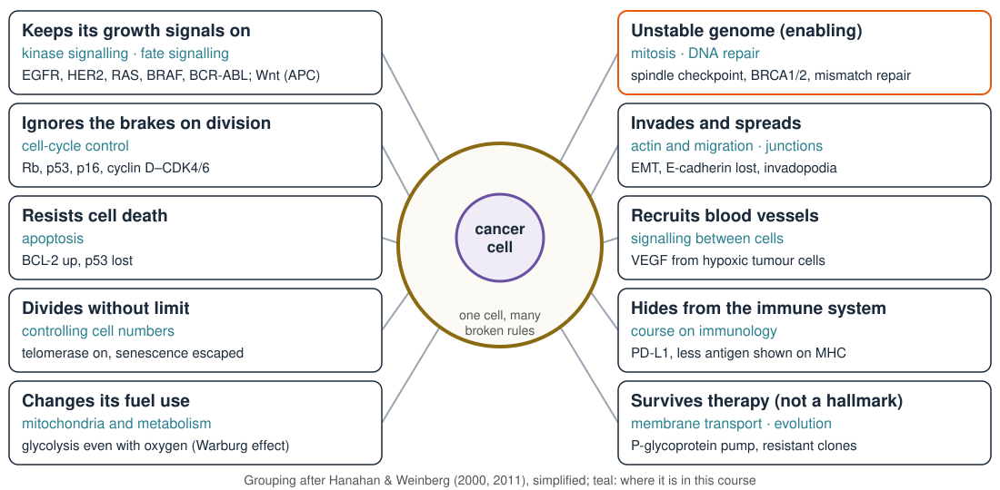
A cancer cell has gained a set of capabilities that normal cells keep under control. Each one is a broken piece of the cell biology you have learned (teal: where).
Genome instability is not a hallmark itself: it is what enables the cell to collect the others quickly.
Two kinds of cancer gene
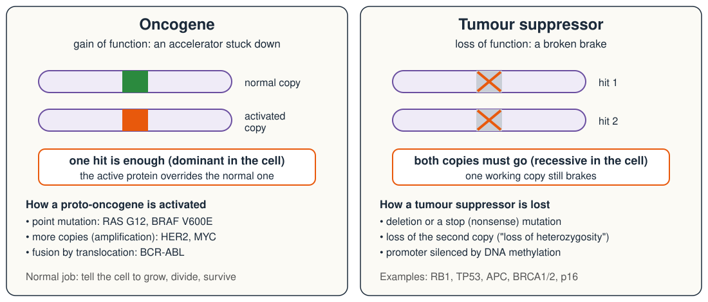
Oncogenes come from normal genes (proto-oncogenes) that make cells grow. A gain of function in one copy is enough.
Tumour suppressors normally stop growth or repair damage. Both copies must be lost: two hits.
How do we know? Retinoblastoma and the two-hit idea
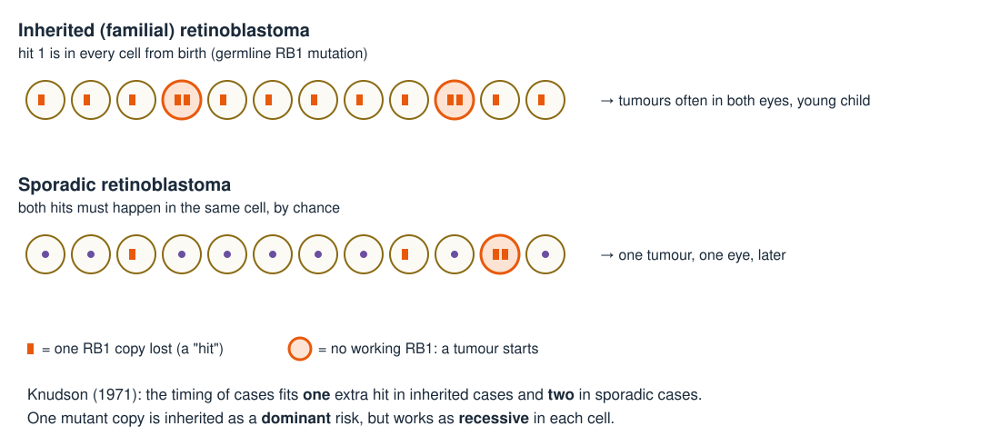
Retinoblastoma is a rare eye tumour of young children. In inherited cases tumours are often in both eyes and appear earlier.
Alfred Knudson (1971): only one more hit is needed when one is inherited. The gene, RB1, was cloned in 1986; its protein Rb is the cell-cycle gate of the next slides.
Growth signals stuck on
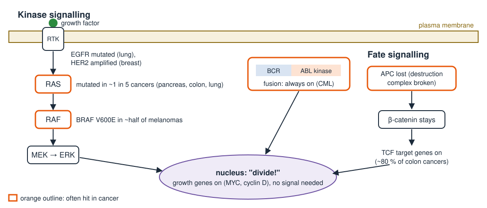
Normal cells divide only when a neighbour sends a signal. Cancer cells make the signal themselves, or switch on a protein below the receptor (the kinase signalling and fate signalling lectures).
One stuck kinase can be a weak point: imatinib (BCR-ABL), vemurafenib (BRAF V600E) and EGFR inhibitors made cancers shrink.
Brakes removed: Rb and p53
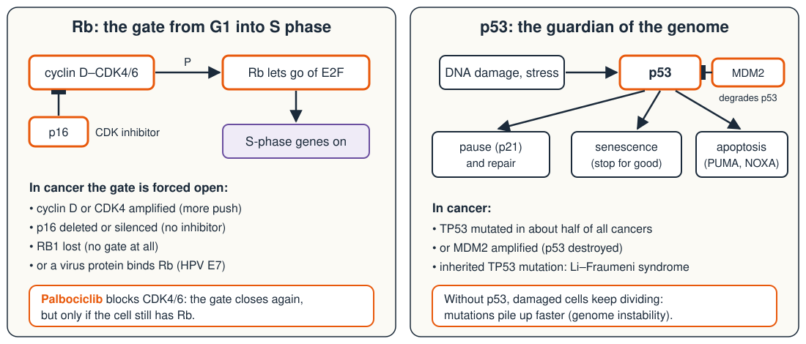
The Rb pathway is broken in most cancers, in one way or another. p53 is the most often mutated gene in human cancer (the cell-cycle control lecture).
CDK4/6 inhibitors (palbociclib) restore the gate in breast cancers that still have Rb.
No death, no limit: BCL-2 and telomerase
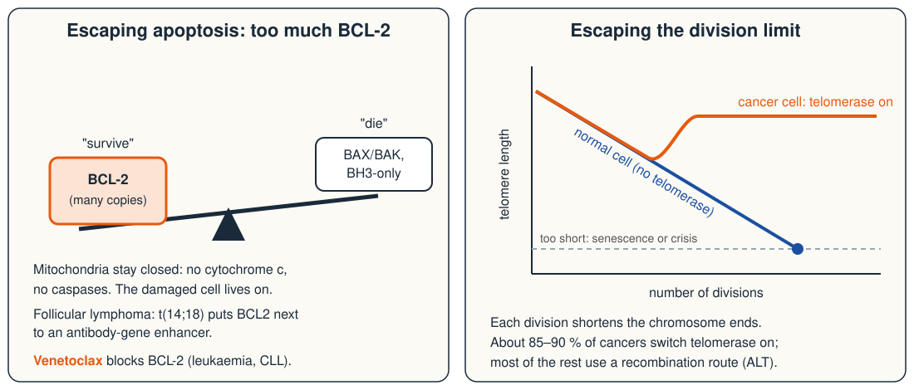
A cell with damaged DNA or no growth signal normally dies by apoptosis. More BCL-2 keeps the mitochondria closed (the apoptosis lecture).
Normal cells stop after a limited number of divisions: telomeres shorten and trigger senescence. Cancer cells turn telomerase back on (the lecture on controlling cell numbers).
Genome instability: a faster route to many hits
Normal cells copy DNA with about one error per 10⁹ bases per division, and repair most damage. With so few errors, collecting 5–10 driver mutations in one cell line would be very rare.
Cancer cells often lose DNA repair (mismatch repair, BRCA1/2 for double-strand breaks) or p53: point mutations pile up faster.
Or they lose chromosome control: extra centrosomes make multipolar spindles, and a weak spindle checkpoint lets chromosomes be lost or gained (aneuploidy; the mitosis lecture).
Most solid tumours have abnormal chromosome numbers; the karyotype differs from cell to cell.
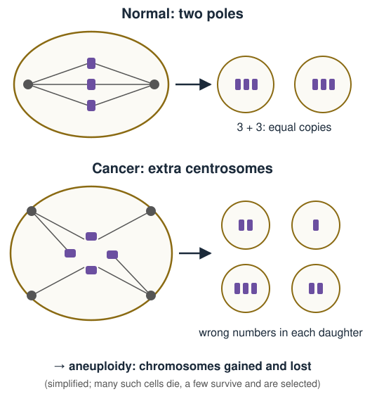
Many hits over many years
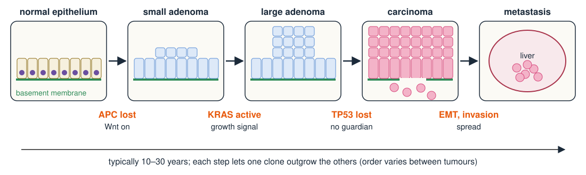
Colorectal cancer often starts with APC loss (a small polyp), then KRAS activation, then TP53 loss. Each step gives one cell an advantage, and its descendants take over.
This is why most cancers appear late in life, and why screening can find and remove adenomas before they become cancer.
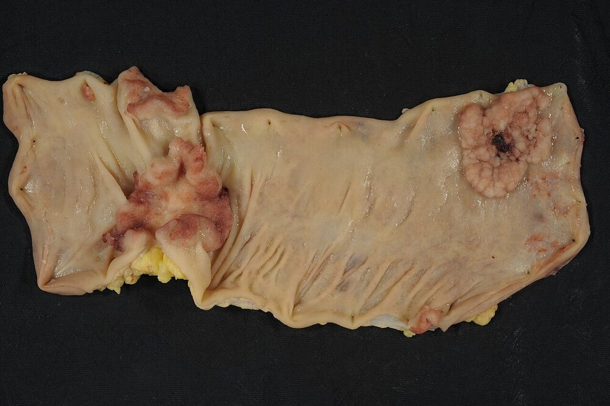
Opened colon: carcinoma (left) and a benign villous adenoma (right).
Cancer is evolution inside the body
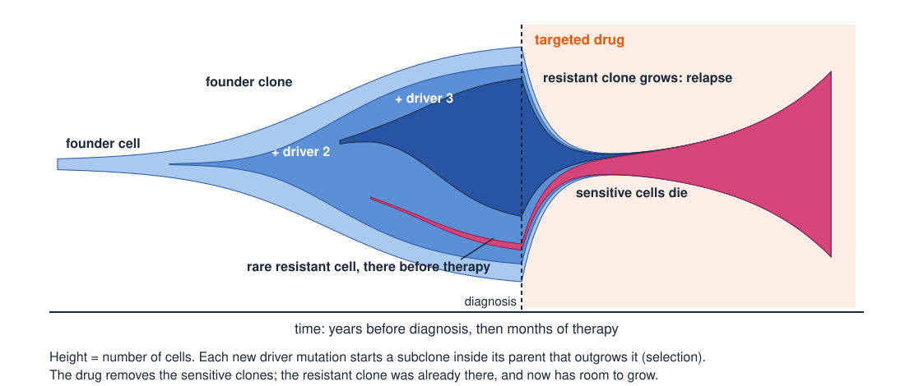
Variation (new mutations) + selection (the fittest cells outgrow the others) = clonal evolution. The tumour becomes a mixture of subclones: heterogeneity.
How do we know? Sequencing many pieces of one tumour
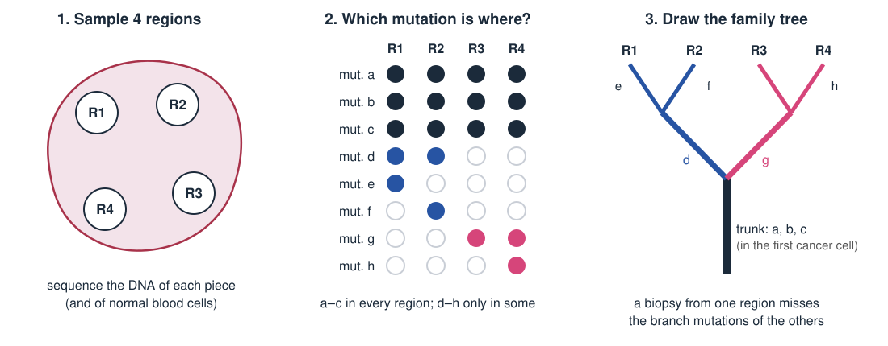
Multi-region sequencing: in kidney cancers (Gerlinger et al., 2012), about two-thirds of the mutations were not found in every region.
Mutations in all regions form the trunk (early, in the first cancer cell); the others are branches. A single biopsy sees only one branch.
Invasion: breaking out of the epithelium
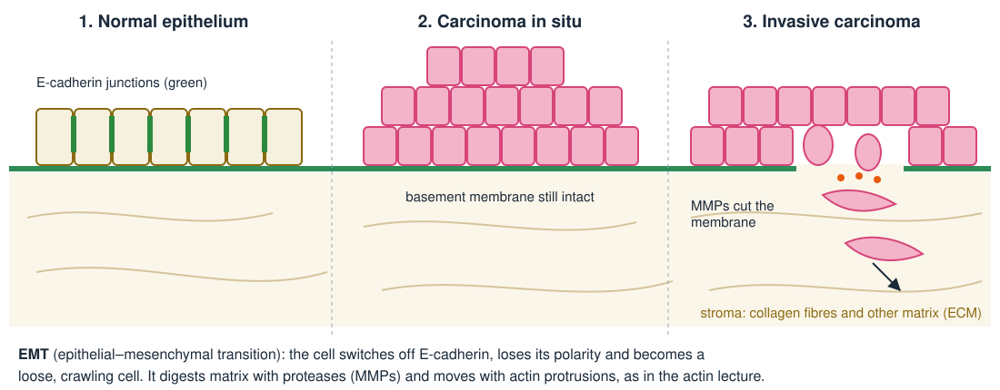
Most cancers are carcinomas: they start in an epithelium. While cells stay above the basement membrane (carcinoma in situ), surgery cures.
Invasion needs new behaviour: loose junctions, protrusions, proteases that cut the matrix.
Metastasis: a long and wasteful journey
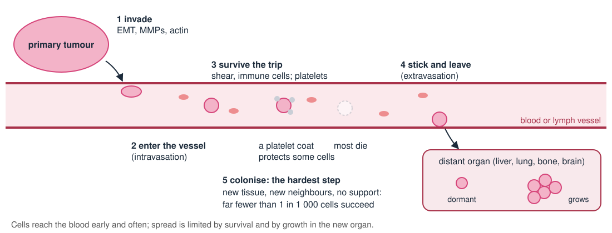
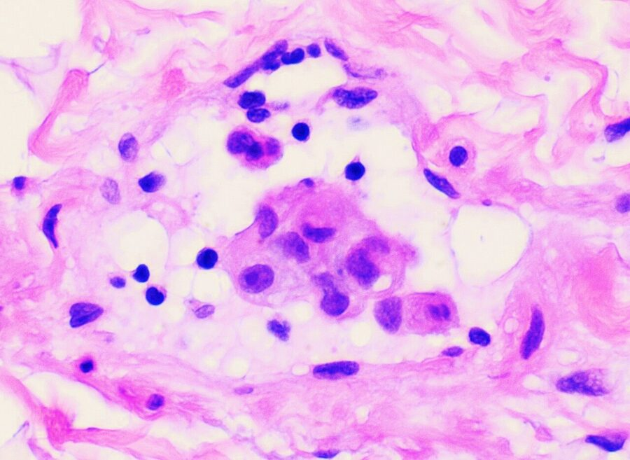
Breast cancer cells (centre) inside a lymph vessel, H&E.
Most cancer deaths are caused by metastases. Tumours shed many cells into the blood, but very few succeed: the last step, growing in a new organ, is the hardest.
Seed and soil: cells grow best where the tissue suits them; breast cancer often goes to bone, colon cancer to liver.
A tumour is a tissue: vessels, fuel and neighbours
Blood vessels: a tumour larger than about 1–2 mm needs its own supply. Hypoxic cells release VEGF; vessels grow in, leaky and disordered (bevacizumab blocks VEGF).
Fuel: many cancer cells take up much more glucose and run glycolysis even with oxygen (the Warburg effect). It gives building blocks for new cells. FDG-PET scans find tumours by their glucose uptake.
Neighbours: fibroblasts make stiff matrix, macrophages can help growth and invasion, and T cells may attack, unless the tumour switches them off.
Chronic inflammation (hepatitis, H. pylori) promotes cancer.
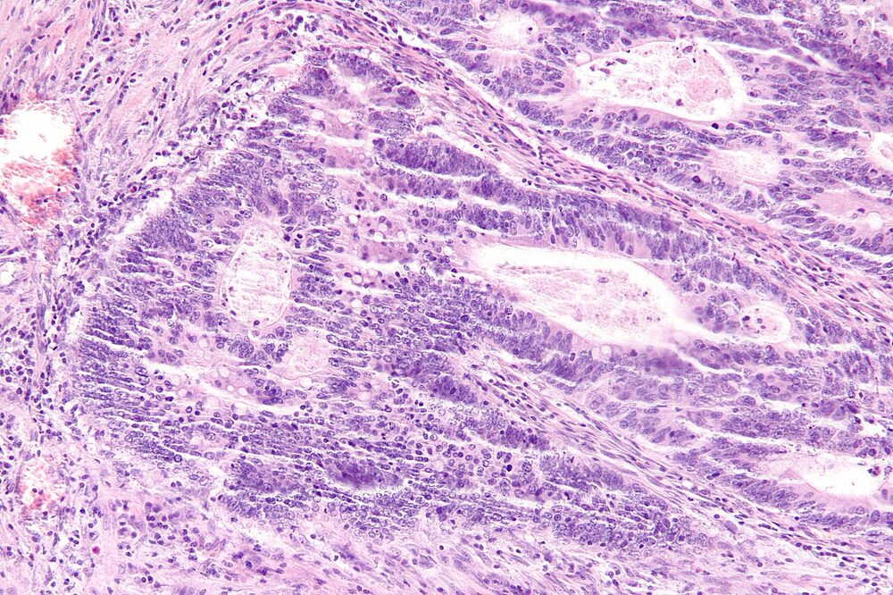
Colorectal carcinoma, H&E: small dark lymphocytes (T cells) between the tumour cells. Patients with many such cells often do better.
Why it matters: targeted therapy and resistance
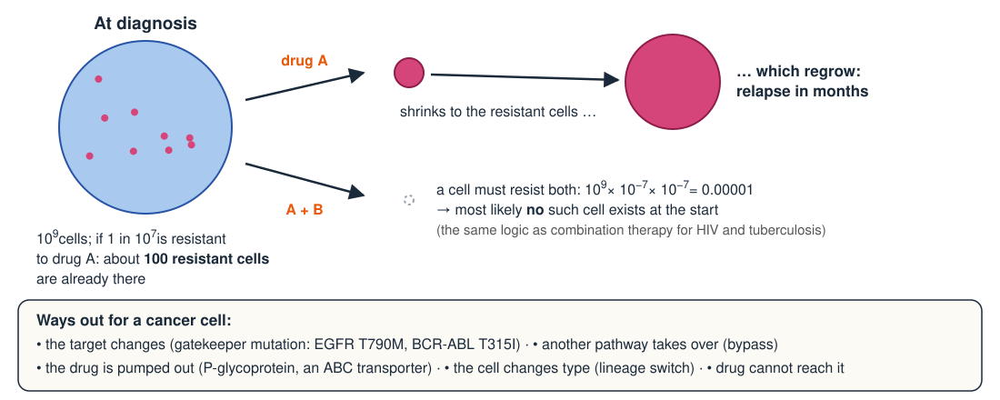
Any one drug selects for resistant cells that were there before. Two drugs with different targets need a cell with two rare mutations.
Resistance can also be non-genetic: P-glycoprotein pumps (the membrane transport lecture) and changes of cell state. More in Kliniska prövningar och läkemedelsutveckling.
Why it matters: checkpoint immunotherapy
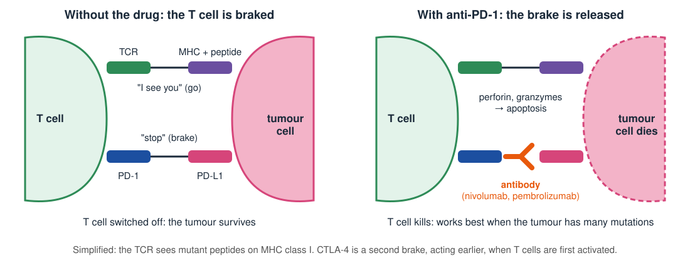
T cells can recognise mutant peptides on tumour cells. Tumours protect themselves with PD-L1, which binds the PD-1 brake on T cells.
Antibodies against PD-1, PD-L1 or CTLA-4 release the brake. Some patients with metastatic melanoma or lung cancer stay in remission for years. Nobel Prize 2018 (Allison, Honjo). More in the immunology course (Immunologi).
Summary
Cancer is one cell’s descendants breaking the rules of the cell: the hallmarks (growth signals on, brakes off, no death, no division limit, invasion, new vessels, altered metabolism, immune escape) each map onto a part of this course.
Oncogenes gain function and act in one copy (RAS, BRAF, HER2, BCR-ABL); tumour suppressors lose function and need two hits (RB1, TP53, APC, BRCA), as shown by retinoblastoma.
Cancer needs several hits over years; genome instability (lost repair, p53, chromosome missegregation) speeds this up. Clonal evolution makes each tumour a heterogeneous mixture of subclones, seen by multi-region sequencing.
Invasion and metastasis need EMT, matrix-cutting proteases and migration through the basement membrane, then survival in blood and growth in a new organ. The microenvironment (vessels, stroma, immune cells) shapes the tumour.
Targeted drugs select resistant clones; combinations reduce this. Checkpoint antibodies (PD-1, CTLA-4) release T cells against the tumour.
Read more (optional): Alberts et al., Molecular Biology of the Cell, 7th ed., ch. 20.